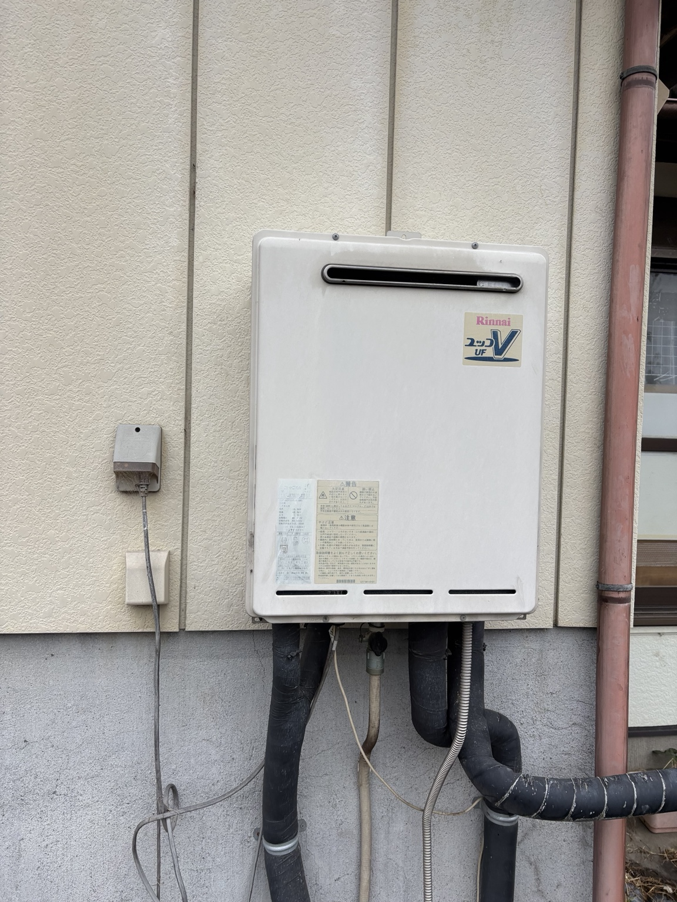
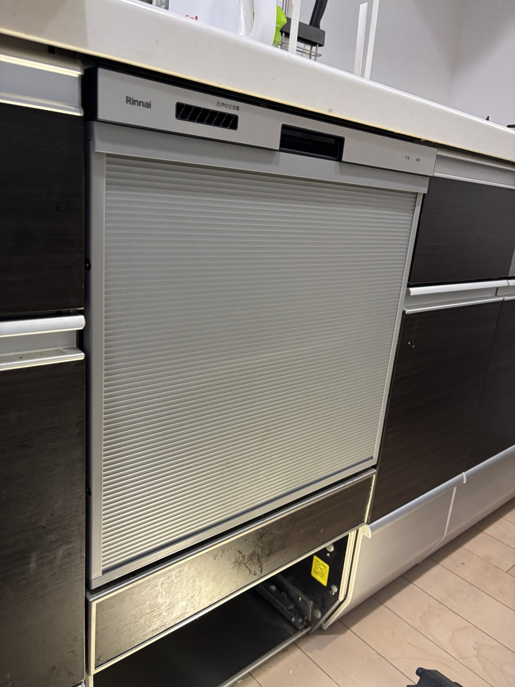

ガス給湯器交換


施工内容：給湯器本体・浴室リモコン・配管保温材を交換し、試運転と動作確認を行いました。
SEISADO WORKS
地域密着で、一件一件丁寧に施工しています。
加須市・久喜市を中心に、給湯器、IHクッキングヒーター、 ビルトイン食洗機などの住宅設備交換工事を行っています。
施工内容：給湯器本体・浴室リモコン・配管保温材を交換し、試運転と動作確認を行いました。


施工内容：既存IHを撤去し、日立製IHクッキングヒーターへ交換。設置後に試運転と操作確認を行いました。


施工内容：既存の石油給湯器を高効率型エコフィールへ交換。浴室リモコンと配管保温材も新しくしました。
施工内容：床暖房対応給湯器を、ウルトラファインバブル対応機種へ交換。浴室リモコンも新しくしました。


施工内容：既存食洗機を撤去し、給排水・電源を確認してリンナイ製ビルトイン食洗機へ交換しました。
加須市・久喜市・羽生市・行田市・幸手市など、近隣地域に対応しています。
お問い合わせはこちら